Undercover Agent: Double Bluff
Find the imposter among you! Two simultaneous clues each.
All players see the same word except the Undercover Agent. Earn points by bluffing or catching the agent. The first player to reach the target score wins.
Players: 3+ (recommended 4–10). No upper limit.
Tutorial
Role Reveal
Each player clicks "Reveal" to see their role, then clicks "Ready" once they've read it. Civilians see the secret word; the agent learns they are the agent.

Waiting to reveal your role at the start of the game.

You're a civilian and the secret word is walrus.

You're the Undercover Agent! Avoid discovery and try to guess the secret word.
Clues
Submit two clues related to the secret word. The agent must bluff to avoid detection.
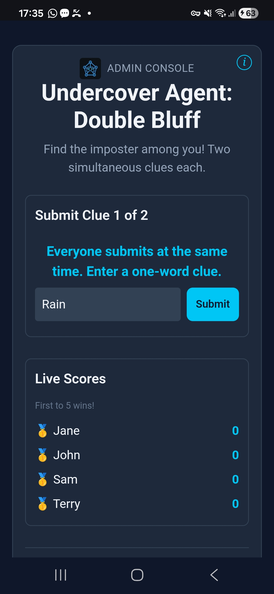
Civillians submit two distinct clues, the first will be shown to the Agent. A random one of the two will be revealed before voting.
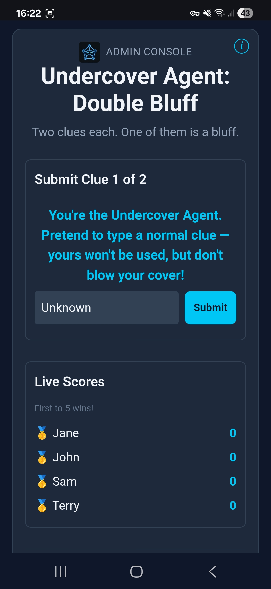
The Undercover Agent submits a phony first clue to bluff that they know the secret word. This first clue won't be used.
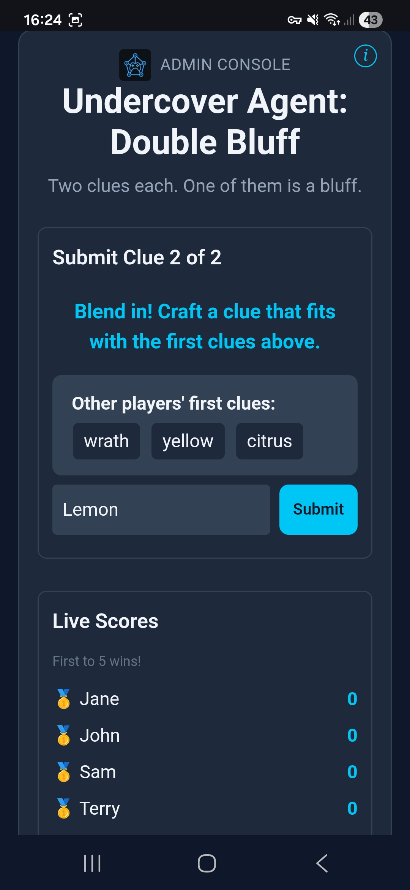
The Undercover Agent uses the first set of civilian clues to craft their own clue.
Voting
Vote for the player you believe is the Undercover Agent. The player with the most votes is the result.

Vote for who you think is the Undercover Agent.
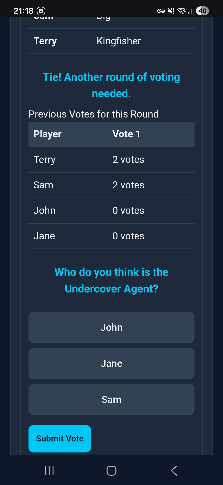
If two or more players are tied for the most votes, everyone votes again until a single player is chosen.
Final Guess
If the Undercover Agent receives the most votes, they get one final chance to guess the secret word to earn points for themself.

You've been discovered! Try to guess the secret word.
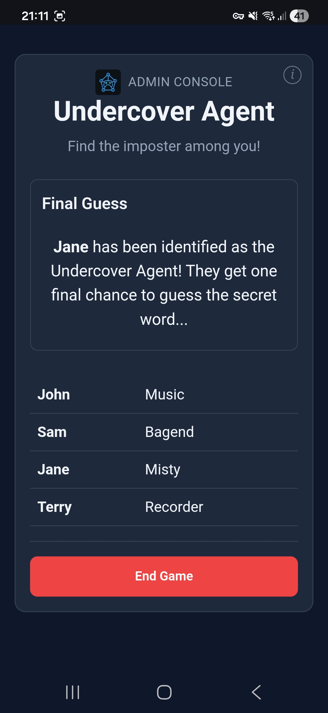
Jane discovered as the Undercover Agent! Waiting for her final guess.
Scoring
Points are awarded after each round and accumulate across multiple rounds. The game continues until at least one player reaches the winning score (configurable by the host, default 10).
- Agent not discovered (majority vote for the wrong player): Undercover Agent scores 3 points. Civilians who voted for the Agent score 1 point.
- Agent discovered - guesses the secret word: Undercover Agent scores 1 point. Civilians who voted for the Agent earn 1 point.
- Agent discovered - guesses wrong: Civilians who voted for the agent earn 2 points. Other civilians earn 1 point.
- Secret word submitted during clues: Agent scores 2 points and round ends immediately.
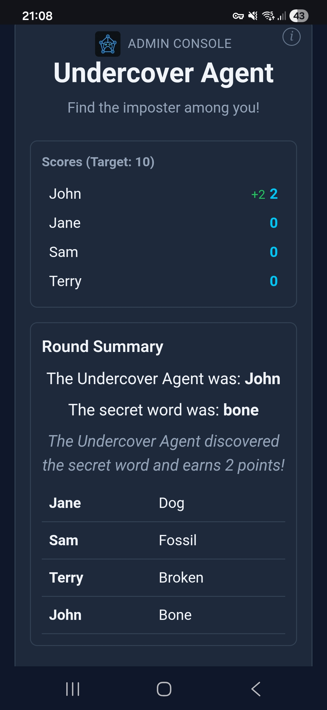
John guessed the secret word during his clue turn.
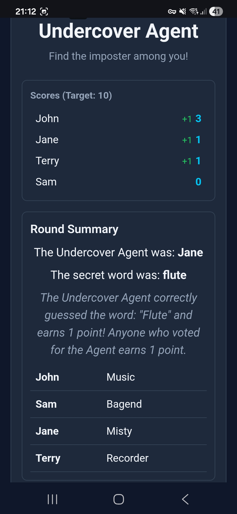
Jane was discovered by Jane and Terry but correctly guessed "Flute".
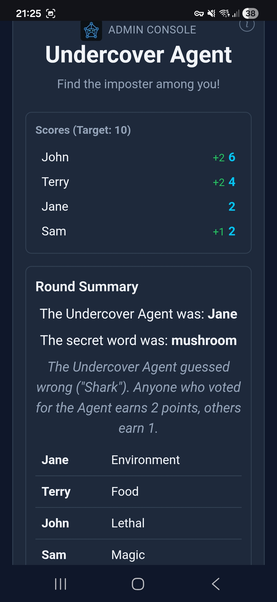
Jane discovered as Undercover Agent and wrong guess. Sam didn't vote for Jane
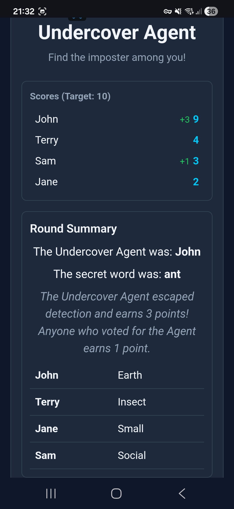
John wasn't discovered but Sam voted correctly.
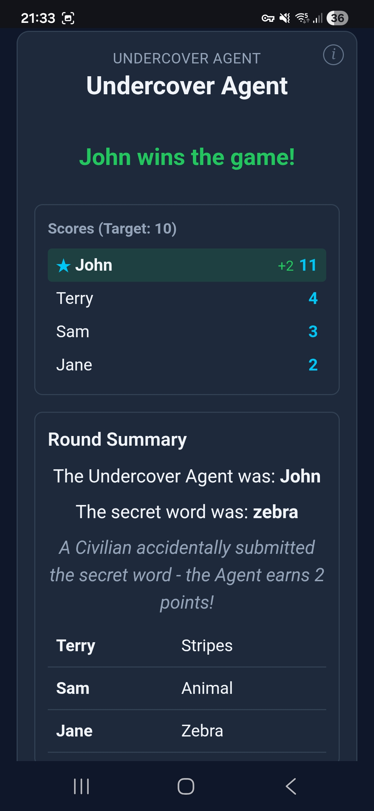
Jane accidentally submitted the secret word
Winner
When a player reaches the winning score, the game ends and they are declared the winner. Multiple players can tie for the win if they share the highest score above the target.
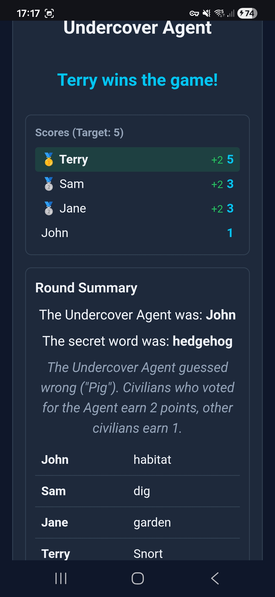
Terry has accumulated enough points to win. The top 3 points scorers receive medals!
Rules
- Roles: Everyone is shown the same secret word, except the Undercover Agent.
- First Clue: All players submit a clue at the same time. The agent writes whatever they like, it won't be used.
- Second Clue: All players submit a second clue while the agent is also shown everyone's first clues.
- Reveal: One random clue from each civilian pair is displayed. Only the agent's second clue is shown.
- Danger: If anyone submits the actual secret word, the agent earns 2 points and the round ends immediately.
- Vote: Vote for who you think the agent is. The player with the most votes is the result. If there is a tie, everyone votes again.
- Guess: If the agent is voted out, they get one final guess at the secret word to earn points.
- Score: Points accumulate across rounds. The first player to reach the winning score wins.